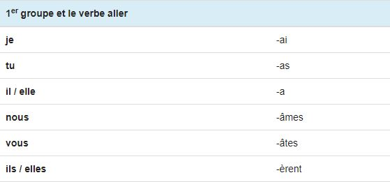
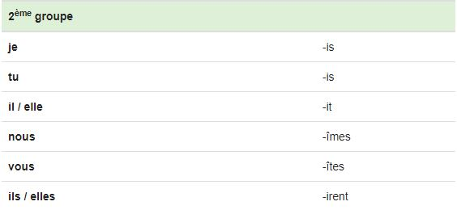
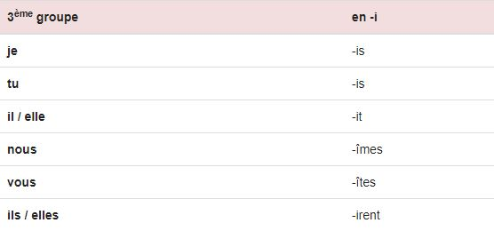
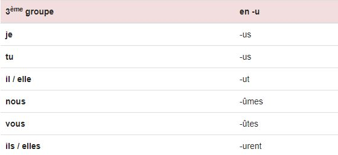
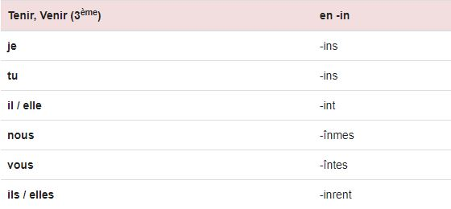
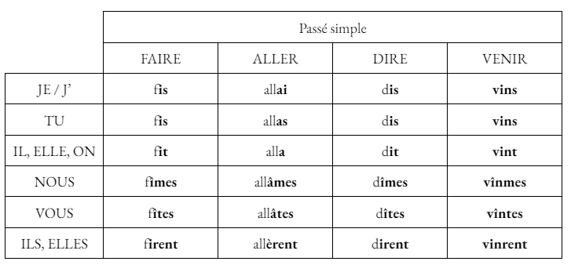
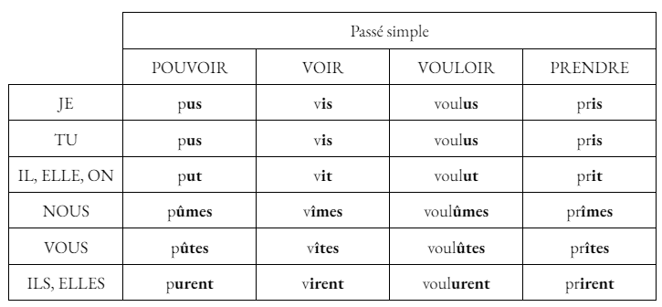
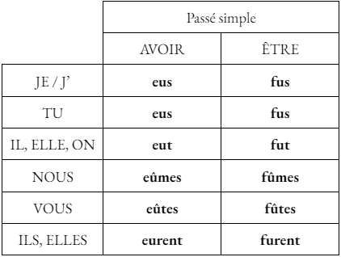

Le Passé Simple
Utilisation
Le passé simple est utilisé pour décrire une action passée, achevée et/ou soudaine. Dans un récit, il est utilisé en association avec l'imparfait.
Exemple : "Pendant que je marchais, il me demanda comment je me sentais."
Terminaisons
Les terminaisons des verbes conjugués au passé simple diffèrent en fonction du groupe.
- Les verbes du 1er groupe et le verbe aller (du 3ème groupe) possèdent des terminaisons en -a 
- Les verbes du 2ème groupe et certains verbes du 3ème groupe possèdent des terminaisons en -i  
- Certains verbes du 3ème groupe possèdent des terminaisons en -u 
- Enfin, le verbe venir (3ème groupe) possède des terminaisons en -in 
Conjugaison des verbes faire, aller, dire, venir, pouvoir, voir, vouloir et prendre
 
Auxiliaires
Voici la conjugaison des auxiliaires avoir et être au passé simple de l'indicatif.

Maintenant que tu as bien compris les points de leçons, clique ici pour t'entraîner avec des verbes et des pronoms aléatoires : Exercice d'entraînement du passé simple